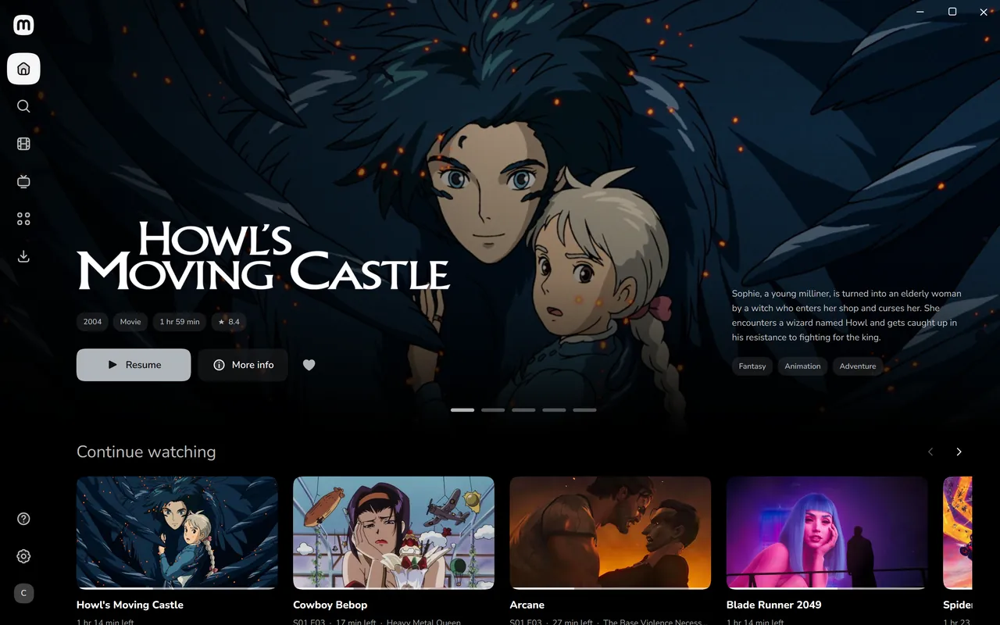
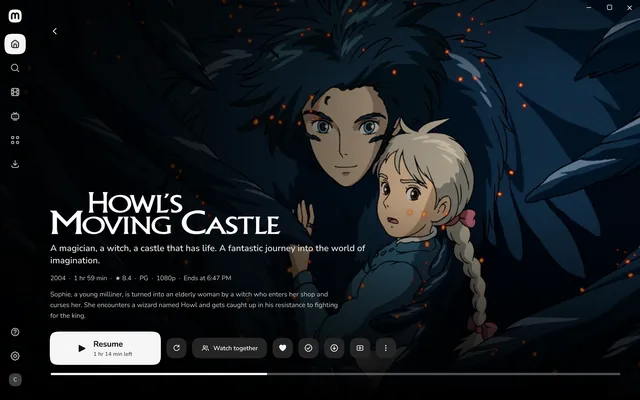

Chaque fichier, tel quel.
Sur Windows et Mac, mpv joue dans Mira, avec le bon audio et les bons sous-titres dès le premier épisode. Ton serveur ne convertit que s’il le faut.
Mira est un client gratuit pour Windows, Mac et iPhone. Chaque film que tu possèdes, lu tel quel, repris où tu t’étais arrêté, regardé avec un ami depuis un lien.
Voir la présentation 1:20
Sur Windows et Mac, mpv joue dans Mira, avec le bon audio et les bons sous-titres dès le premier épisode. Ton serveur ne convertit que s’il le faut.
Envoie ton lien de party. Un ami donne un prénom et regarde avec toi, sans compte sur ton serveur.
Pas de compte Mira, pas de statistiques, pas de publicité. Les Réglages listent chaque connexion de Mira, et comment couper chacune.


Windows 10 ou 11, x64
Apple silicon, macOS 15 ou plus récent
brew install --cask sasou-web/mira/miraGuideImage disque
iOS 26 ou plus récent, avec AltStore
miracinema.app/altstore.jsonInstaller avec AltStore
Fichiers Windows pas encore signés : SmartScreen peut demander une confirmation. Empreintes SHA-256 dans chaque release.